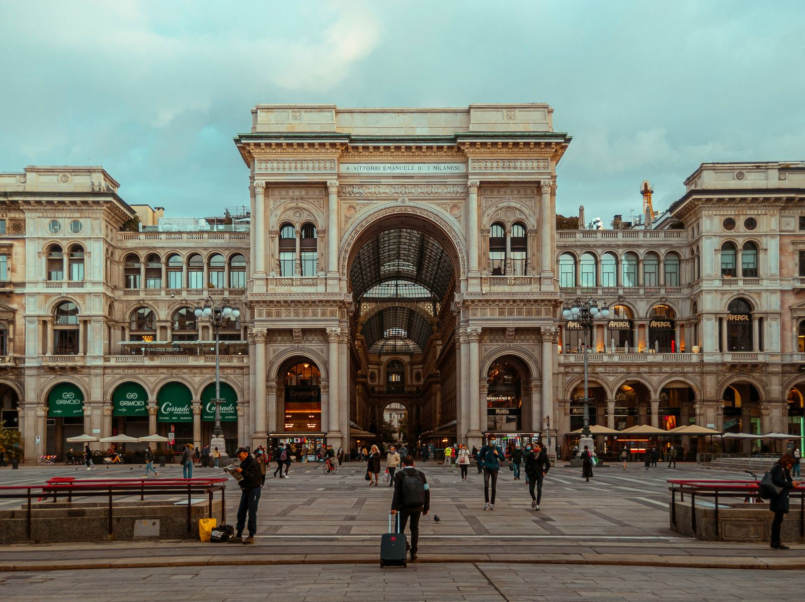

Explore the rich history and unique styles of Italian fashion. Discover iconic designers and the evolution of Italian fashion from the 20th century to today. Immerse yourself in the elegance of Italian style.
Esplora la ricca storia e gli stili unici della moda italiana. Scopri designer iconici e l'evoluzione della moda italiana dal XX secolo a oggi. Immergiti nell'eleganza dello stile italiano.
La Nascita della Moda Italiana
La moda italiana è sinonimo di artigianato meticoloso e materiali pregiati. Dopo la Seconda Guerra Mondiale, Milano ha assunto il ruolo di capitale mondiale della moda, lanciando tendenze che hanno conquistato il pianeta. Le case di moda italiane, come Versace, Armani, Prada e Valentino, hanno reso lo stile italiano un'icona globale.
La Storia della Moda Italiana
L'ascesa della moda italiana è stata fortemente influenzata dagli Stati Uniti. Gli stilisti italiani hanno saputo interpretare perfettamente le esigenze delle donne americane, portando alla creazione del celebre "made in Italy". La moda italiana ha iniziato a farsi strada anche attraverso il cinema, con star internazionali che sceglievano abiti italiani per i loro spettacoli.
Milano, Capitale della Moda
Il boom della moda italiana è esploso a Milano, con l'arrivo di negozi iconici come quello di Elio Fiorucci, noto per uno stile colorato e pop. Successivamente, nomi come Giorgio Armani, Gianni Versace e Gianfranco Ferreccio hanno consolidato la posizione dell'Italia nel mondo della moda.

Gli Stili della Moda Italiana
La moda italiana si distingue per la sua qualità e versatilità, spaziando dal bohemien al casual, mescolando tradizione e modernità. Questi stili unici continuano a influenzare le passerelle di tutto il mondo.
fonte: Storia Della Moda Italiana, Tipi Di Moda, Stile Italiano, Stilisti
Parole Chiave
| Moda | Stile e tendenze nell'abbigliamento e nell'aspetto esteriore. |
| Stile | Il modo in cui qualcosa è fatto o presentato, in questo caso, l'aspetto generale di un capo di abbigliamento. |
| Artigianale | Qualcosa fatto a mano o con abilità artigianale. |
| Materiali | Le sostanze usate per fare qualcosa. |
| Seconda | Dopo la prima. |
| Guerra | Un conflitto armato tra due o più paesi o gruppi. |
| Capitale | La città più importante di un paese, dove si trova il governo. |
| Casa | L'edificio in cui vive una persona o una famiglia. |
| Bellezza | La qualità di essere piacevole da vedere o da avere. |
| Fai da te | Progetti realizzati da soli, senza l'aiuto di professionisti. |
| Tecnologia | L'uso pratico della conoscenza scientifica per scopi pratici. |
| Viaggio | Andare da un posto all'altro, solitamente per piacere o lavoro. |
| Consigli | Suggerimenti o raccomandazioni su come fare qualcosa. |
| Contatti | Informazioni di contatto come indirizzo email o numero di telefono. |
| Icona | Un simbolo riconosciuto che rappresenta qualcosa di importante. |
| Internazionale | Coinvolge più di un paese o nazione. |
| Tendenze | Modelli di comportamento o stili popolari. |
| Abbigliamento | Vestiti e accessori indossati dalle persone. |
| Stilisti | Persone che progettano e creano abiti e accessori di moda. |
Esercizio
Domande
- Quali sono alcune delle case di moda italiane considerate leggendarie in tutto il mondo?
- Perché la moda italiana è diventata così importante dopo la Seconda Guerra Mondiale?
- Quali gli eventi storici che hanno influenzato la moda italiana?
- Quali sono stati i tre stilisti chiave che hanno contribuito a consolidare il ruolo dell'Italia nella moda mondiale?
- In che modo la moda italiana è stata influenzata dal cinema e dalle star internazionali?